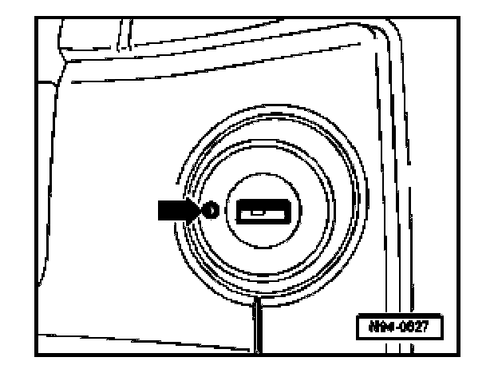

Ignition Key, Emergency Release
Ignition Key, Emergency Release
If the voltage supply in the vehicle is interrupted or the battery goes dead, the key may be removed by manually operating a mechanical emergency release.
- Turn key to "OFF".

- Press in push button -arrow- using a screwdriver and hold in.
- Key may now be removed.